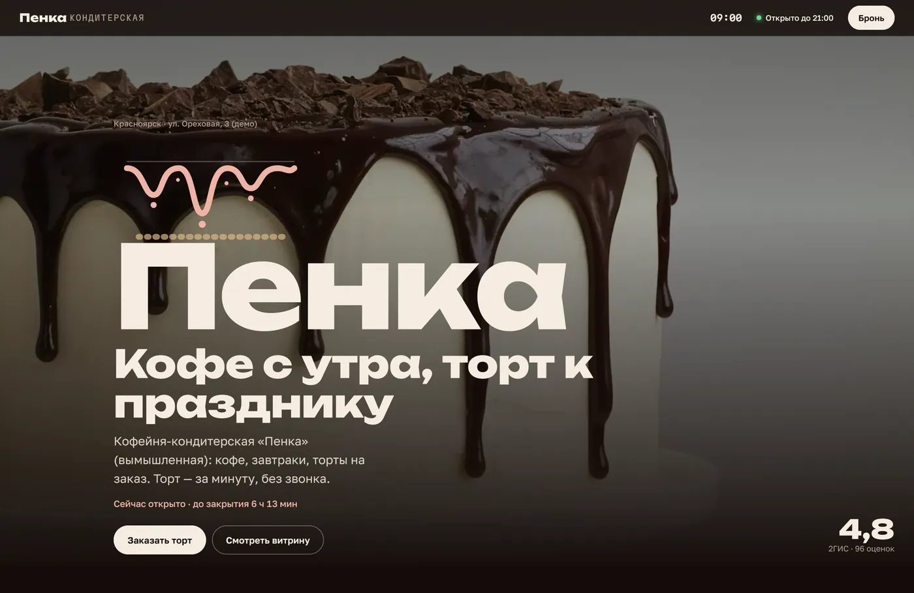
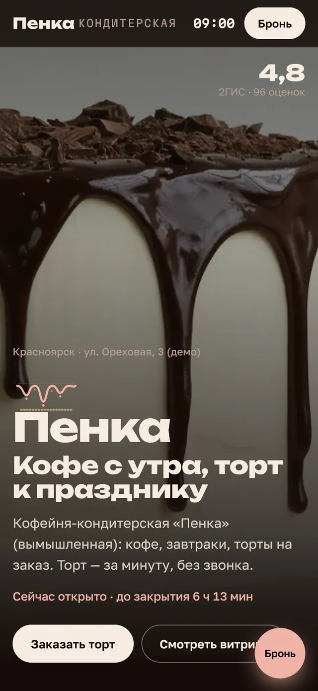
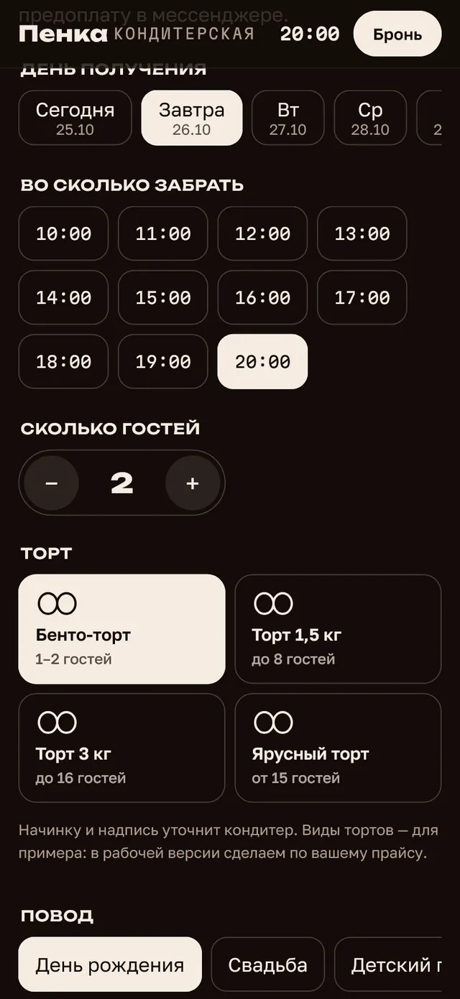
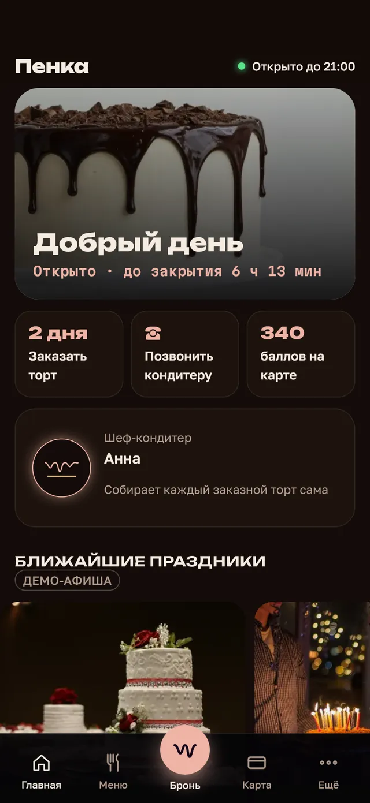
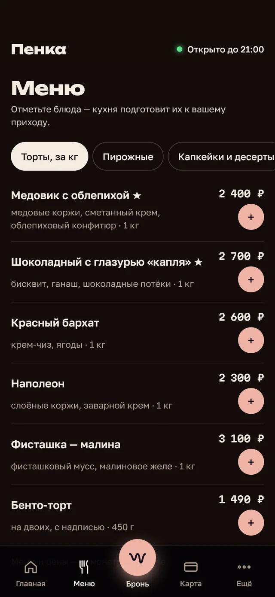
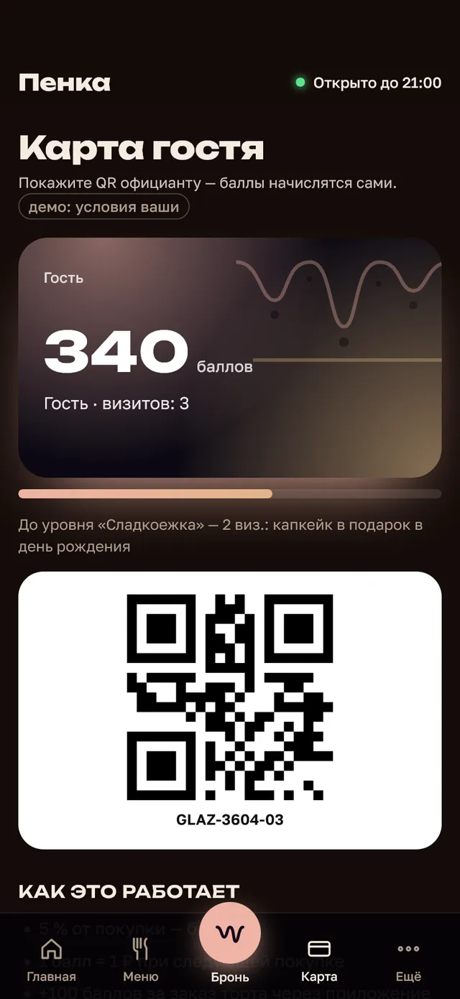
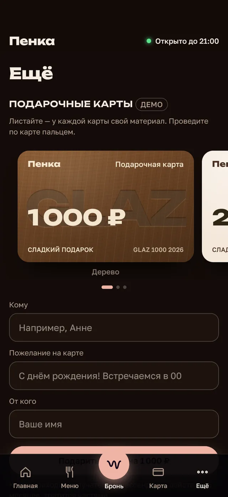
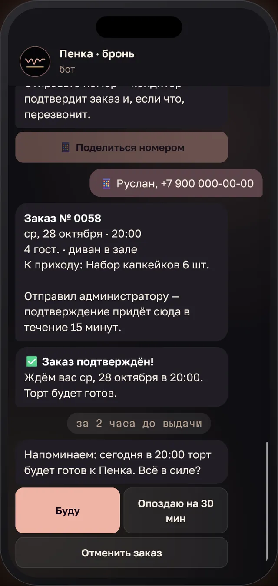
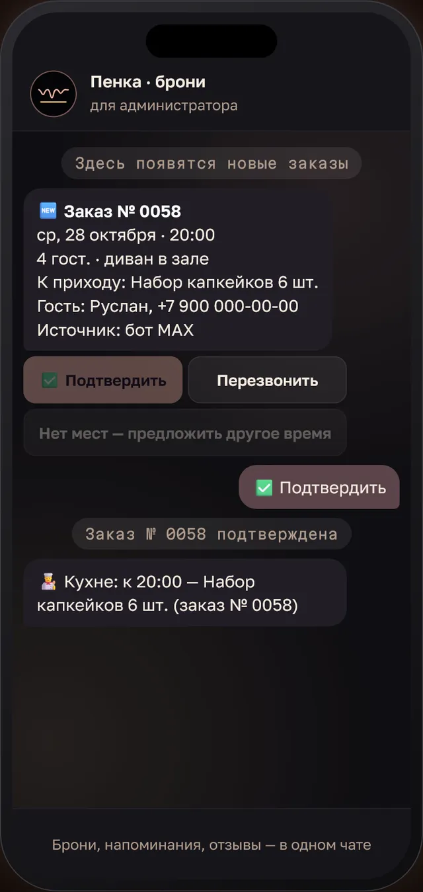

Образец визитки · демо · вымышленный бизнес
Кофейня-кондитерская (демо) · ул. Ореховая, 3 (демо)
Так «Пенка» может встречать гостей в интернете: витрина и меню с первого экрана, заказ торта без звонка, приложение с бонусами и бот. Это заставка — так открывается ваш сайт.
Сайт живёт по часам дня: утренний кофе, витрина, торты на заказ, праздники. Табличка «Открыто» — по часам гостя. Человек с трассы или из соседнего района за пять секунд понимает, что вы рядом и открыты.


Набросок на основе нашей работы: фото, меню и тексты будут ваши, стиль подберём под ваш зал и вывеску.

Без магазина приложений: гость добавляет иконку на экран за секунду. Заказ торта в два касания, витрина, бонусная карта с QR и подарочные сертификаты — повод заходить за кофе каждый день.






Поставьте свои цифры: средний заказ торта и сколько новых заказов в месяц придёт с сайта, бота и приложения. Это не обещание, а арифметика.
Сайт под ваш стиль: витрина и меню с ценами, торты на заказ, отзывы, карта. Яндекс и скорость. 5 дней.
Плюс онлайн-заказ торта и уведомления кондитеру в MAX или Telegram. 3 месяца сопровождения в подарок.
Сайт, заказ торта, приложение гостя с баллами и сертификатами, бот заказов. 3 месяца сопровождения в подарок.
Или сайт по подписке: 0 ₽ за разработку и 4 900 ₽ в месяц. Демо с вашей витриной и фото тортов покажем до оплаты — бесплатно.
ВКонтакте и телефон остаются. Сайт добавляет тех, кто ищет «кондитерская рядом» или «торт на заказ» в Яндексе и на картах, и тех, кто решает заказать торт поздно вечером.
Кондитер подтверждает заказ в мессенджере и присылает ссылку на предоплату — как вы привыкли. Позже можно подключить оплату прямо на сайте.
Витрину дня обновляете с телефона за минуту — фото и цена. Гость видит, что свежее сегодня.
Сразу в MAX или Telegram: дата, торт, повод, число гостей, добавки и кнопки «Подтвердить» и «Перезвонить». Гостю приходит напоминание в день выдачи.
Около 15 минут: ответить на 5 вопросов, прислать прайс на торты, меню и фото работ. Тексты, дизайн и запуск делаем мы.
Демо с вашими данными — 2 дня, бесплатно. Готовый сайт — 5–10 дней после «да». Домен оформляем на вас, все доступы передаём.
Делаю сайты, онлайн-заказ и приложения для кондитерских, кофеен и кафе Красноярского края. Вы общаетесь напрямую с тем, кто делает, без менеджеров. Работаю официально как самозанятый — чек на каждую оплату.